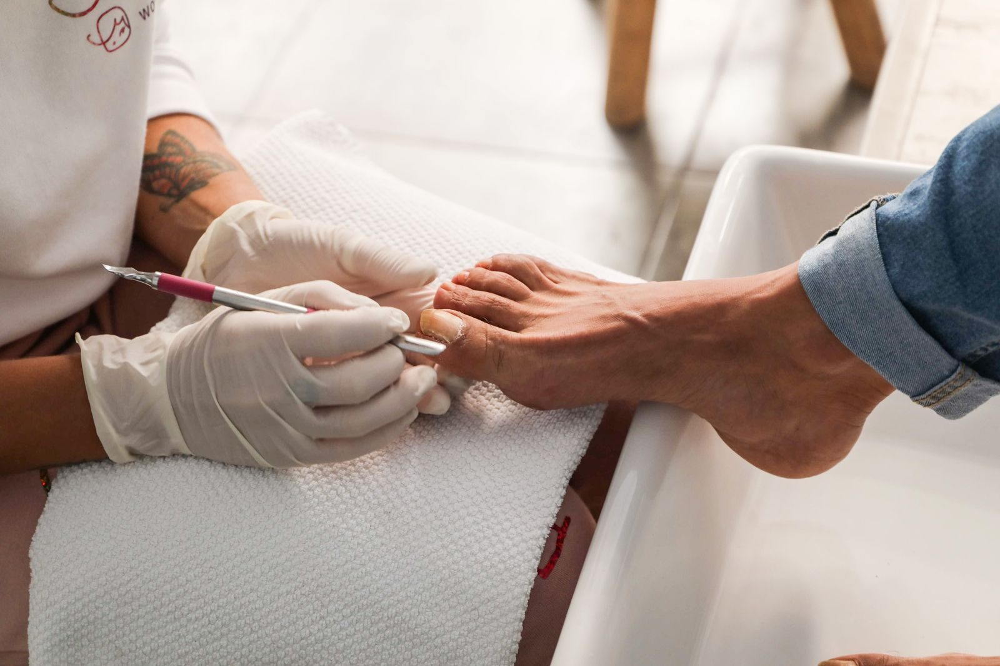
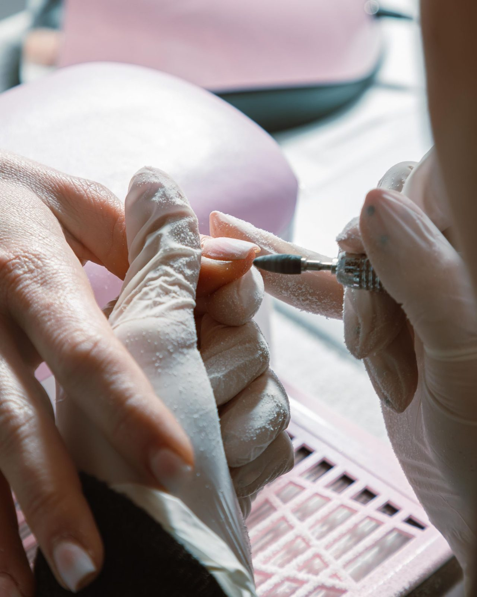

Gallery


Bay St. Louis, Mississippi
A nail salon and spa at 295 US-90 in Bay St. Louis offering manicures, pedicures, and nail care. Call to book an appointment.

Paradise Nail Spa is a nail salon and spa at 295 US-90 #24 in Bay St. Louis. Research lists manicures, pedicures, and nail care. No detailed menu or prices were verified on an own site, so none are shown here.
